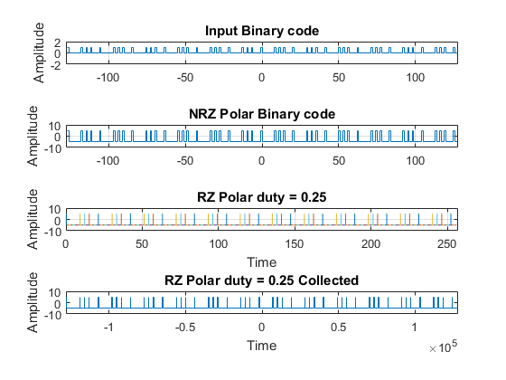

Contents
%----------------------------------------------------------------------% %%----------------- SemiExam2 - Digital Communication --------------------%% %--------------- Supervisor: Dr.Shirvani Moghaddam --------------% %------- Source by Mohammad Reza Farhadi Nia ----- Date:24 Dec 2020 --% %----------------------------------------------------------------------%
Section A
pnSequence1 = comm.PNSequence('Polynomial',[9 6 0], ... 'SamplesPerFrame',1022,'InitialConditions',[0 0 0 0 0 0 0 0 1]); Binary_Random_Input = pnSequence1(); Binary_Input_test = [Binary_Random_Input(1:511) Binary_Random_Input(512:1022)]; Binary_Random_Input = Binary_Random_Input(1:256)' NRZ_on_off = Binary_Random_Input; NRZ_Polar = Binary_Random_Input; for i = 1:length(Binary_Random_Input) if Binary_Random_Input(i) == 1 NRZ_Polar(i) = 5; else NRZ_Polar(i) = -5; end end figure subplot(4,1,1);stairs([-length(Binary_Random_Input)/2+1:length(Binary_Random_Input)/2],Binary_Random_Input) axis([-length(Binary_Random_Input)/2 length(Binary_Random_Input)/2 -2 2]);title('Input Binary code');grid on; ylabel('Amplitude'); subplot(4,1,2);stairs([-length(NRZ_Polar)/2+1:length(NRZ_Polar)/2],NRZ_Polar) axis([-length(NRZ_Polar)/2 length(NRZ_Polar)/2 -10 10]);title('NRZ Polar Binary code');grid on; ylabel('Amplitude');
Binary_Random_Input =
Columns 1 through 13
1 0 0 0 0 0 0 0 0 1 0 0 1
Columns 14 through 26
0 0 1 0 0 0 0 0 1 0 0 0 0
Columns 27 through 39
0 0 0 0 1 0 0 1 0 0 1 0 0
Columns 40 through 52
0 0 0 1 0 0 0 0 0 0 0 0 1
Columns 53 through 65
0 0 1 0 0 1 0 0 0 0 0 1 0
Columns 66 through 78
0 0 0 0 0 0 0 1 0 0 1 0 0
Columns 79 through 91
1 0 0 0 0 0 1 0 0 0 0 0 0
Columns 92 through 104
0 0 1 0 0 1 0 0 1 0 0 0 0
Columns 105 through 117
0 1 0 0 0 0 0 0 0 0 1 0 0
Columns 118 through 130
1 0 0 1 0 0 0 0 0 1 0 0 0
Columns 131 through 143
0 0 0 0 0 1 0 0 1 0 0 1 0
Columns 144 through 156
0 0 0 0 1 0 0 0 0 0 0 0 0
Columns 157 through 169
1 0 0 1 0 0 1 0 0 0 0 0 1
Columns 170 through 182
0 0 0 0 0 0 0 0 1 0 0 1 0
Columns 183 through 195
0 1 0 0 0 0 0 1 0 0 0 0 0
Columns 196 through 208
0 0 0 1 0 0 1 0 0 1 0 0 0
Columns 209 through 221
0 0 1 0 0 0 0 0 0 0 0 1 0
Columns 222 through 234
0 1 0 0 1 0 0 0 0 0 1 0 0
Columns 235 through 247
0 0 0 0 0 0 1 0 0 1 0 0 1
Columns 248 through 256
0 0 0 0 0 1 0 0 0
Section B
RZ duty = 0.25
b = Binary_Random_Input; l=length(b); b(l+1)=0; n=1; duty = 0.25; Collect = []; while n<=l t=(n-1):.001:n; if b(n)==1 y = 10*(t<=n-(1-duty) & t>=(n-1))-5; Collect = [Collect y]; elseif b(n)==0 y = -10*(~(t>=n-(1-duty) & t<=(n-1)))+5; Collect = [Collect y]; else y=0; Collect = [Collect y]; end subplot(4,1,3);plot(t,y) hold on; grid on; axis([0 length(b) -10 10]); n=n+1; end title('RZ Polar duty = 0.25'); xlabel('Time'); ylabel('Amplitude'); subplot(4,1,4);stairs([-length(Collect)/2+1:length(Collect)/2],Collect) axis([-length(Collect)/2 length(Collect)/2 -10 10]); title('RZ Polar duty = 0.25 Collected'); xlabel('Time'); ylabel('Amplitude');
Section C
figure Binary_Random_Noise = randi([0 1],1,256); % RZ nosie duty = 0.25 c = Binary_Random_Noise; l=length(c); c(l+1)=0; n=1; duty = 0.25; Noise = []; while n<=l t=(n-1):.001:n; if c(n)==1 y = 6*(t<n-(1-duty) & t>(n-1))-3; Noise = [Noise y]; elseif c(n)==0 y = -6*(~(t>n-(1-duty) & t<(n-1)))+3; Noise = [Noise y]; else y=0; Noise = [Noise y]; end subplot(4,1,1);plot(t,y) hold on; grid on; axis([0 length(c) -10 10]); n=n+1; end title('RZ Polar duty = 0.25 Noise'); xlabel('Time'); ylabel('Amplitude'); Signal_and_Noise = Noise + Collect; subplot(4,1,2);stairs([-length(Signal_and_Noise)/2+1:length(Signal_and_Noise)/2],Signal_and_Noise) axis([-length(Signal_and_Noise)/2 length(Signal_and_Noise)/2 -10 10]); title('RZ Polar duty = 0.25 Signal With Noise'); xlabel('Time'); ylabel('Amplitude'); offset1 = 3; offset2 = -3; output_NRZ_on_off = Comparator(offset1,Signal_and_Noise'); output_NRZ_Polar = Comparator(offset2,Signal_and_Noise');
Undefined function 'Comparator' for input arguments of type 'double'. Error in SemiFinalExamSecond (line 96) output_NRZ_on_off = Comparator(offset1,Signal_and_Noise');
Function
% % function Output = Comparator(Offset, input) % % Output = (input>Offset); % you can change equal to strictly % % end